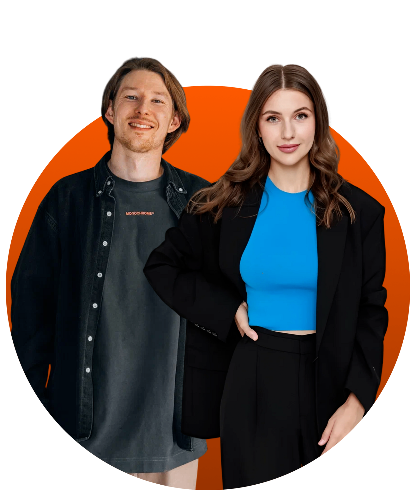
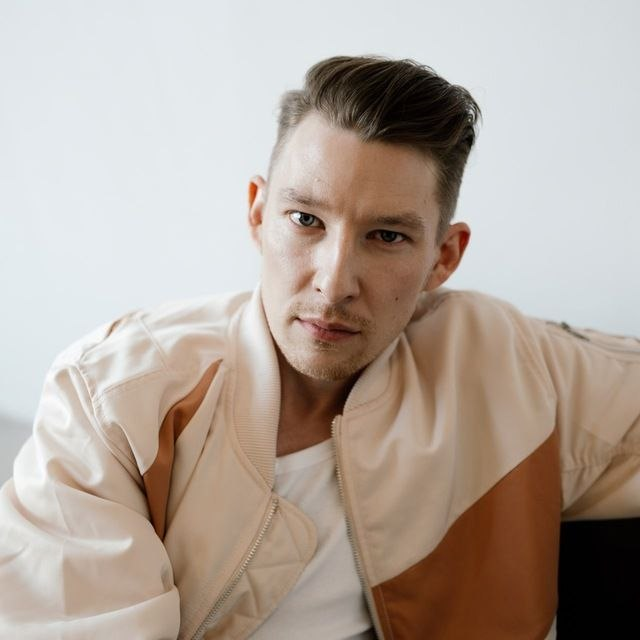
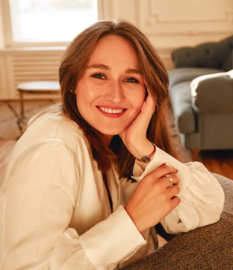
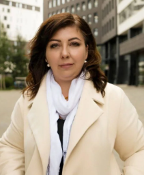
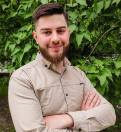
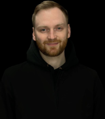
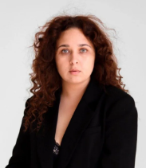
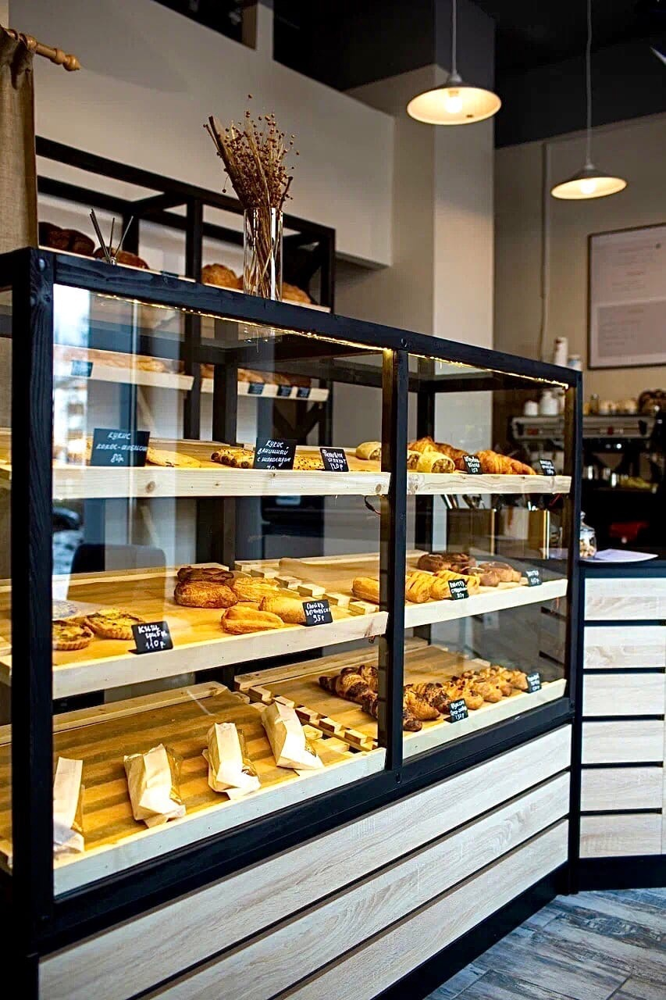
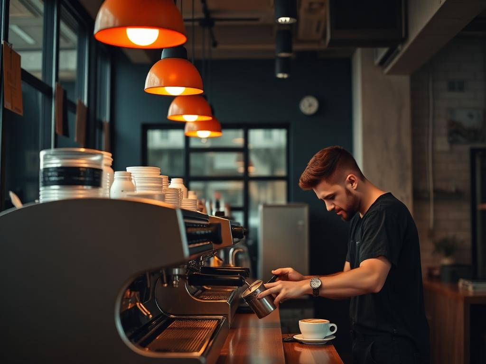

На бизнес-курсах школа не обучает ремеслу — программы посвящены именно построению бизнеса.
Задача проекта — помочь предпринимателям запустить первое заведение, заранее увидеть риски, избежать ошибок на старте и рационально использовать бюджет.
Компания помогает предпринимателям создавать и запускать кофейни, пекарни и кондитерские. Образовательные программы объединяют практику действующего бизнеса и опыт сотен открытых проектов.

О компании
Школа обучает созданию и запуску заведений — от финансовой модели и концепции до открытия и управления.
На бизнес-курсах школа не обучает ремеслу — программы посвящены именно построению бизнеса.
Задача проекта — помочь предпринимателям запустить первое заведение, заранее увидеть риски, избежать ошибок на старте и рационально использовать бюджет.
Развивать предпринимателей, которые открывают новые заведения и делают города комфортнее и интереснее.
В основе программ — практика собственных проектов и результаты выпускников по России и СНГ.
по количеству доказательных кейсов и годовой выручке
инвестиций GetCourse за первое место в конкурсе на грант
учеников прошли курсы по всей России
реальных отзывов учеников
образовательных компаний России и СНГ по версии GetCourse
бизнесов выпускников: 100+ заведений и 300+ брендов
Основатели


Специалисты и наставники
Наставники сопровождают проекты на основе собственной практики в ресторанном бизнесе, производстве и развитии сетей.

Наставник курса

Наставник курса

Наставник курса

Наставник курса

Наставник курса
За 7 лет команда открыла больше 10 заведений вместе с наставниками — проекты продолжают успешно работать.
Более 4 000 выпускников школыКейсы учеников
Примеры перехода от исходной идеи и опыта к работающему заведению.



Признание

Публикация «Кофе на колёсах: как сеть мобильных кафе в Петербурге спасала свой бизнес и врачей в пандемию». Материал ↗
ТОП-10 премии, 2020.
Финалист президентской программы, 2022.
Автор статьи «Тренды кофейного бизнеса 2019».

Награда за вклад в развитие онлайн-образования и попадание в число самых успешных школ платформы.

История Александры Афанасьевой вошла в подборку вдохновляющих историй по мнению экспертов национальной премии.
Открытые каналы
Школа в социальных сетях
Публикации, новости проектов и материалы о бизнесе в сфере общепита.